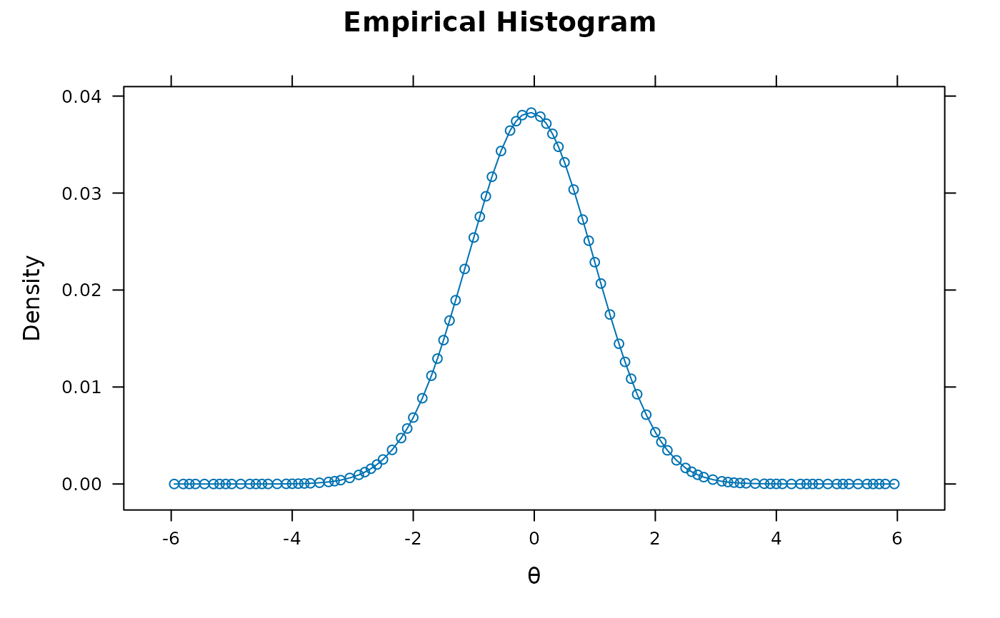
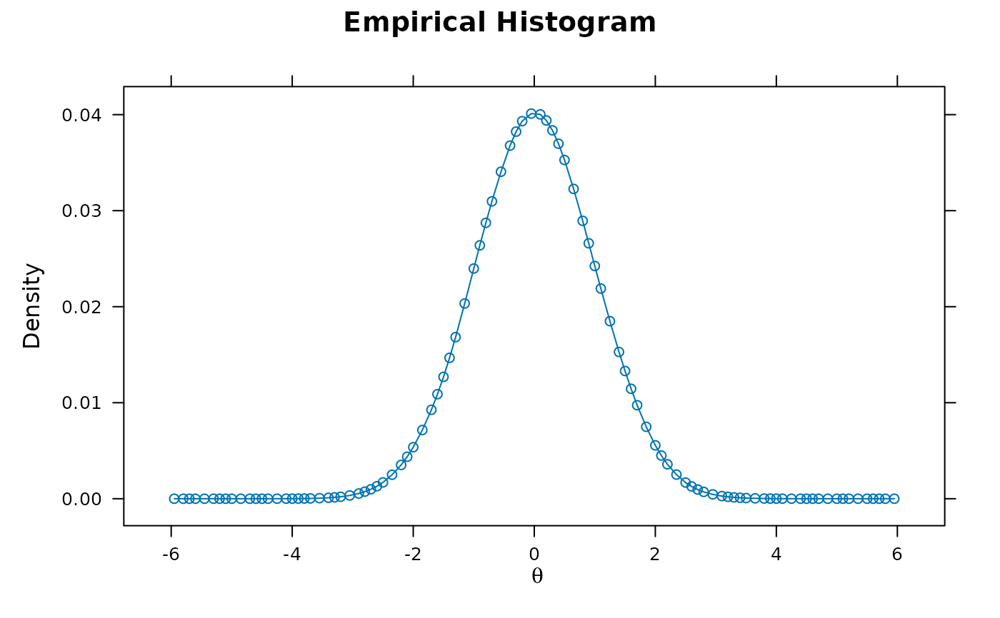
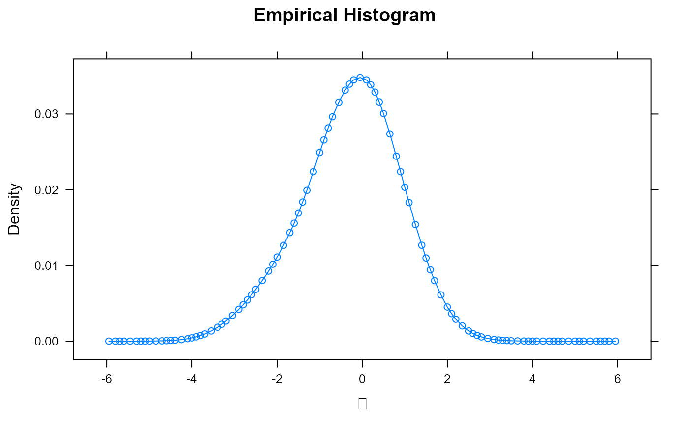
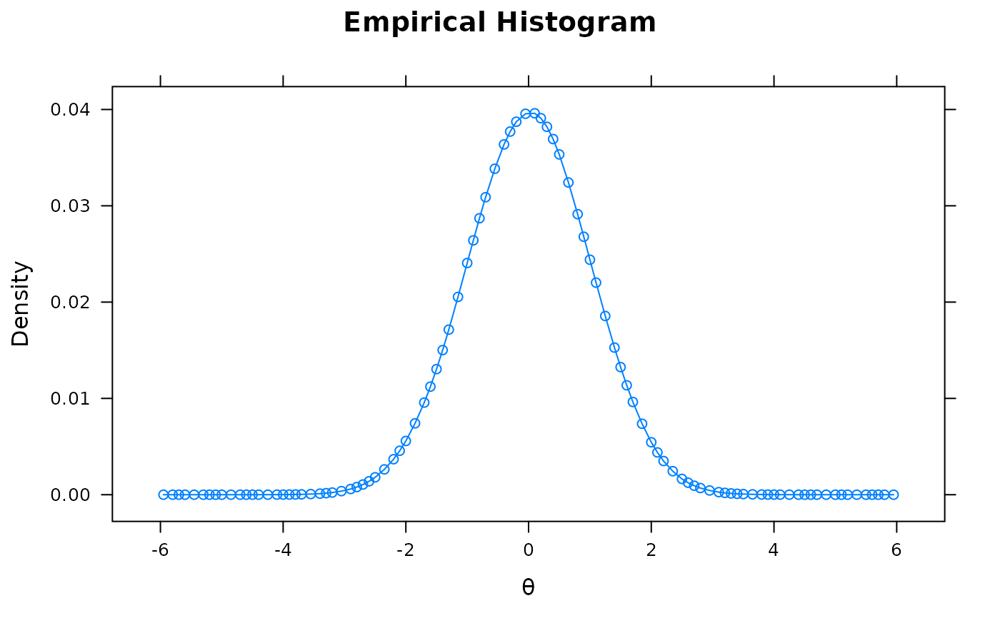
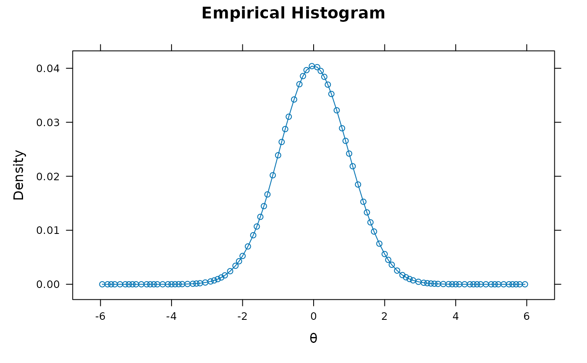

Implements the set of fixed-item calibration methods described by Kim (2006). The initial
calibrated model must be fitted via mirt, is currently limited to
unidimensional models only, and should only be utilized when the new set of responses
are obtained from a population with similar distributional characteristics in the latent traits.
For more flexible calibration of items, including a fixed-item calibration variant involving
anchor items for equating, see multipleGroup.
fixedCalib( data, model = 1, old_mod, PAU = "MWU", NEMC = "MEM", technical = list(), ... )
| data | new data to be used for calibration. Note that to be consistent
with the |
|---|---|
| model | type of model to fit for the complete dataset (not that for the fixed items
in |
| old_mod | a model of class SingleGroupClass fitted using |
| PAU | prior ability update (PAU) approach. Supports none ( |
| NEMC | number of EM cycles (NEMC) to use for the to-be-estimated parameters.
Supports one ( |
| technical | list of technical estimation arguments
(see |
| ... | additional arguments to pass to |
Kim, S. (2006). A comparative study of IRT fixed parameter calibration methods. Journal of Educational Measurement, 4(43), 355-381.
# \donttest{ # single factor set.seed(12345) J <- 50 a <- matrix(abs(rnorm(J,1,.3)), ncol=1) d <- matrix(rnorm(J,0,.7),ncol=1) itemtype <- rep('2PL', nrow(a)) # calibration data theta ~ N(0,1) N <- 3000 dataset1 <- simdata(a, d, N = N, itemtype=itemtype) # new data (again, theta ~ N(0,1)) dataset2 <- simdata(a, d, N = 1000, itemtype=itemtype) # last 40% of experimental items not given to calibration group # (unobserved; hence removed) dataset1 <- dataset1[,-c(J:(J*.6))] head(dataset1)#> Item_1 Item_2 Item_3 Item_4 Item_5 Item_6 Item_7 Item_8 Item_9 Item_10 #> [1,] 0 0 0 0 0 0 1 1 1 0 #> [2,] 0 0 0 1 0 1 0 0 0 0 #> [3,] 0 1 0 1 1 1 1 1 1 1 #> [4,] 0 1 1 0 1 0 0 0 1 0 #> [5,] 1 0 1 1 1 0 1 0 1 0 #> [6,] 1 1 0 1 0 1 0 1 1 0 #> Item_11 Item_12 Item_13 Item_14 Item_15 Item_16 Item_17 Item_18 Item_19 #> [1,] 1 1 1 1 1 0 0 0 1 #> [2,] 0 0 1 0 0 0 1 1 0 #> [3,] 1 1 0 1 0 1 0 0 0 #> [4,] 0 0 1 1 0 0 1 1 0 #> [5,] 0 0 0 1 0 0 1 1 1 #> [6,] 1 0 1 1 0 0 1 0 1 #> Item_20 Item_21 Item_22 Item_23 Item_24 Item_25 Item_26 Item_27 Item_28 #> [1,] 0 0 0 0 1 0 0 1 0 #> [2,] 0 1 0 0 1 0 0 1 1 #> [3,] 0 1 0 1 1 1 1 0 0 #> [4,] 0 0 0 0 0 1 0 1 0 #> [5,] 0 1 1 1 1 1 1 1 1 #> [6,] 0 0 0 1 1 1 0 0 0 #> Item_29 #> [1,] 1 #> [2,] 1 #> [3,] 1 #> [4,] 1 #> [5,] 1 #> [6,] 1# assume first 60% of items not given to new group dataset2[,colnames(dataset1)] <- NA head(dataset2)#> Item_1 Item_2 Item_3 Item_4 Item_5 Item_6 Item_7 Item_8 Item_9 Item_10 #> [1,] NA NA NA NA NA NA NA NA NA NA #> [2,] NA NA NA NA NA NA NA NA NA NA #> [3,] NA NA NA NA NA NA NA NA NA NA #> [4,] NA NA NA NA NA NA NA NA NA NA #> [5,] NA NA NA NA NA NA NA NA NA NA #> [6,] NA NA NA NA NA NA NA NA NA NA #> Item_11 Item_12 Item_13 Item_14 Item_15 Item_16 Item_17 Item_18 Item_19 #> [1,] NA NA NA NA NA NA NA NA NA #> [2,] NA NA NA NA NA NA NA NA NA #> [3,] NA NA NA NA NA NA NA NA NA #> [4,] NA NA NA NA NA NA NA NA NA #> [5,] NA NA NA NA NA NA NA NA NA #> [6,] NA NA NA NA NA NA NA NA NA #> Item_20 Item_21 Item_22 Item_23 Item_24 Item_25 Item_26 Item_27 Item_28 #> [1,] NA NA NA NA NA NA NA NA NA #> [2,] NA NA NA NA NA NA NA NA NA #> [3,] NA NA NA NA NA NA NA NA NA #> [4,] NA NA NA NA NA NA NA NA NA #> [5,] NA NA NA NA NA NA NA NA NA #> [6,] NA NA NA NA NA NA NA NA NA #> Item_29 Item_30 Item_31 Item_32 Item_33 Item_34 Item_35 Item_36 Item_37 #> [1,] NA 0 0 1 0 1 1 0 0 #> [2,] NA 0 1 0 0 0 0 0 0 #> [3,] NA 1 1 1 0 1 0 0 1 #> [4,] NA 1 1 1 1 1 1 1 0 #> [5,] NA 1 1 0 1 1 0 1 1 #> [6,] NA 1 1 1 1 1 1 1 1 #> Item_38 Item_39 Item_40 Item_41 Item_42 Item_43 Item_44 Item_45 Item_46 #> [1,] 0 0 1 0 0 1 0 0 0 #> [2,] 0 0 0 0 1 0 1 0 0 #> [3,] 0 0 1 0 1 1 1 0 1 #> [4,] 1 1 1 1 0 1 0 1 1 #> [5,] 0 0 1 0 1 1 0 0 1 #> [6,] 1 1 1 1 1 1 1 1 1 #> Item_47 Item_48 Item_49 Item_50 #> [1,] 0 1 0 0 #> [2,] 1 1 0 1 #> [3,] 0 1 0 0 #> [4,] 1 1 1 1 #> [5,] 0 1 1 0 #> [6,] 1 1 1 0#-------------------------------------- # calibrated model from dataset1 only mod <- mirt(dataset1, model = 1) coef(mod, simplify=TRUE)#> $items #> a1 d g u #> Item_1 1.196 -0.366 0 1 #> Item_2 1.218 1.345 0 1 #> Item_3 1.029 -0.017 0 1 #> Item_4 0.817 0.230 0 1 #> Item_5 1.148 -0.462 0 1 #> Item_6 0.473 0.157 0 1 #> Item_7 1.172 0.491 0 1 #> Item_8 0.882 0.599 0 1 #> Item_9 0.732 1.367 0 1 #> Item_10 0.737 -1.703 0 1 #> Item_11 0.988 0.057 0 1 #> Item_12 1.621 -0.888 0 1 #> Item_13 1.211 0.362 0 1 #> Item_14 1.261 1.101 0 1 #> Item_15 0.748 -0.319 0 1 #> Item_16 1.171 -1.247 0 1 #> Item_17 0.742 0.637 0 1 #> Item_18 0.925 1.128 0 1 #> Item_19 1.477 0.395 0 1 #> Item_20 1.037 -0.993 0 1 #> Item_21 1.136 0.068 0 1 #> Item_22 1.402 -0.513 0 1 #> Item_23 0.679 -0.684 0 1 #> Item_24 0.483 1.690 0 1 #> Item_25 0.501 1.048 0 1 #> Item_26 1.604 0.636 0 1 #> Item_27 0.833 0.559 0 1 #> Item_28 1.100 -0.493 0 1 #> Item_29 1.200 0.354 0 1 #> #> $means #> F1 #> 0 #> #> $cov #> F1 #> F1 1 #># No Prior Weights Updating and One EM Cycle (NWU-OEM) NWU_OEM <- fixedCalib(dataset2, model = 1, old_mod = mod, PAU = 'NWU', NEMC = 'OEM') coef(NWU_OEM, simplify=TRUE)#> $items #> a1 d g u #> Item_1 1.196 -0.366 0 1 #> Item_2 1.218 1.345 0 1 #> Item_3 1.029 -0.017 0 1 #> Item_4 0.817 0.230 0 1 #> Item_5 1.148 -0.462 0 1 #> Item_6 0.473 0.157 0 1 #> Item_7 1.172 0.491 0 1 #> Item_8 0.882 0.599 0 1 #> Item_9 0.732 1.367 0 1 #> Item_10 0.737 -1.703 0 1 #> Item_11 0.988 0.057 0 1 #> Item_12 1.621 -0.888 0 1 #> Item_13 1.211 0.362 0 1 #> Item_14 1.261 1.101 0 1 #> Item_15 0.748 -0.319 0 1 #> Item_16 1.171 -1.247 0 1 #> Item_17 0.742 0.637 0 1 #> Item_18 0.925 1.128 0 1 #> Item_19 1.477 0.395 0 1 #> Item_20 1.037 -0.993 0 1 #> Item_21 1.136 0.068 0 1 #> Item_22 1.402 -0.513 0 1 #> Item_23 0.679 -0.684 0 1 #> Item_24 0.483 1.690 0 1 #> Item_25 0.501 1.048 0 1 #> Item_26 1.604 0.636 0 1 #> Item_27 0.833 0.559 0 1 #> Item_28 1.100 -0.493 0 1 #> Item_29 1.200 0.354 0 1 #> Item_30 0.850 2.357 0 1 #> Item_31 1.067 2.335 0 1 #> Item_32 1.870 4.510 0 1 #> Item_33 1.069 1.984 0 1 #> Item_34 1.781 5.561 0 1 #> Item_35 0.901 2.511 0 1 #> Item_36 0.943 3.012 0 1 #> Item_37 0.911 2.051 0 1 #> Item_38 0.830 0.970 0 1 #> Item_39 1.241 2.760 0 1 #> Item_40 0.790 2.299 0 1 #> Item_41 0.962 1.464 0 1 #> Item_42 0.234 -0.365 0 1 #> Item_43 0.721 3.059 0 1 #> Item_44 0.977 1.711 0 1 #> Item_45 0.865 1.248 0 1 #> Item_46 1.064 2.498 0 1 #> Item_47 0.595 1.001 0 1 #> Item_48 1.110 3.668 0 1 #> Item_49 0.964 1.583 0 1 #> Item_50 0.686 0.971 0 1 #> #> $means #> F1 #> 0 #> #> $cov #> F1 #> F1 1 #>#> a1 d pop_a1 pop_d #> Item_1 1.1961890 -0.36582599 1.1756586 -0.37827025 #> Item_2 1.2180200 1.34513036 1.2128398 1.36338487 #> Item_3 1.0287076 -0.01749165 0.9672090 0.03751319 #> Item_4 0.8169838 0.22955350 0.8639508 0.24616399 #> Item_5 1.1477420 -0.46213650 1.1817662 -0.46968358 #> Item_6 0.4734409 0.15748181 0.4546132 0.19456759 #> Item_7 1.1723767 0.49084966 1.1890296 0.48381989 #> Item_8 0.8823964 0.59861143 0.9171448 0.57665673 #> Item_9 0.7320060 1.36669674 0.9147521 1.50154551 #> Item_10 0.7374958 -1.70288028 0.7242034 -1.64286078 #> Item_11 0.9877230 0.05684034 0.9651257 0.10471439 #> Item_12 1.6208445 -0.88830542 1.5451936 -0.93977204 #> Item_13 1.2113938 0.36247319 1.1111884 0.38731215 #> Item_14 1.2608594 1.10068854 1.1560649 1.11297399 #> Item_15 0.7483149 -0.31912299 0.7748404 -0.41081572 #> Item_16 1.1708992 -1.24683338 1.2450700 -1.28266411 #> Item_17 0.7422645 0.63674114 0.7340927 0.62169760 #> Item_18 0.9248296 1.12848731 0.9005267 1.11544193 #> Item_19 1.4767582 0.39539515 1.3362138 0.36179827 #> Item_20 1.0368814 -0.99330414 1.0896171 -0.90697018 #> Item_21 1.1357543 0.06752098 1.2338866 0.03823090 #> Item_22 1.4021119 -0.51282038 1.4367355 -0.54925456 #> Item_23 0.6786602 -0.68438097 0.8067015 -0.73454697 #> Item_24 0.4828002 1.68992778 0.5340588 1.63135837 #> Item_25 0.5011412 1.04812815 0.5206871 0.98189377 #> Item_26 1.6039924 0.63625385 1.5415293 0.65982060 #> Item_27 0.8328685 0.55938549 0.8555058 0.57838080 #> Item_28 1.1001393 -0.49299690 1.1861139 -0.56807834 #> Item_29 1.1996287 0.35417420 1.1836370 0.33337380 #> Item_30 0.8499274 2.35692733 0.9513067 0.71488089 #> Item_31 1.0665386 2.33460498 1.2435620 0.45176815 #> Item_32 1.8697518 4.51030529 1.6590501 0.73020049 #> Item_33 1.0692908 1.98377904 1.6147571 -0.21305838 #> Item_34 1.7811590 5.56101633 1.4897337 1.73397764 #> Item_35 0.9005511 2.51121351 1.0762814 0.67985447 #> Item_36 0.9428943 3.01211016 1.1473565 1.30696943 #> Item_37 0.9112076 2.05055107 0.9027740 0.47042973 #> Item_38 0.8303196 0.97023247 0.5013849 -0.21556737 #> Item_39 1.2410892 2.76017579 1.5303202 0.37556660 #> Item_40 0.7898628 2.29850680 1.0077403 0.57740905 #> Item_41 0.9615706 1.46398033 1.3385533 -0.67473104 #> Item_42 0.2335748 -0.36462109 0.2858926 -0.59855776 #> Item_43 0.7213965 3.05904672 0.6819203 1.32086286 #> Item_44 0.9765218 1.71102766 1.2811422 -0.27427356 #> Item_45 0.8646977 1.24785773 1.2563355 -0.68644306 #> Item_46 1.0635294 2.49791623 1.4382188 0.48113247 #> Item_47 0.5949594 1.00064808 0.5760704 -0.35353046 #> Item_48 1.1100250 3.66839647 1.1702210 1.51040387 #> Item_49 0.9637967 1.58296721 1.1749563 -0.41985829 #> Item_50 0.6861672 0.97139592 0.6079603 -0.48618269# No Prior Weights Updating and Multiple EM Cycles (NWU-MEM) NWU_MEM <- fixedCalib(dataset2, model = 1, old_mod = mod, PAU = 'NWU') coef(NWU_MEM, simplify=TRUE)#> $items #> a1 d g u #> Item_1 1.196 -0.366 0 1 #> Item_2 1.218 1.345 0 1 #> Item_3 1.029 -0.017 0 1 #> Item_4 0.817 0.230 0 1 #> Item_5 1.148 -0.462 0 1 #> Item_6 0.473 0.157 0 1 #> Item_7 1.172 0.491 0 1 #> Item_8 0.882 0.599 0 1 #> Item_9 0.732 1.367 0 1 #> Item_10 0.737 -1.703 0 1 #> Item_11 0.988 0.057 0 1 #> Item_12 1.621 -0.888 0 1 #> Item_13 1.211 0.362 0 1 #> Item_14 1.261 1.101 0 1 #> Item_15 0.748 -0.319 0 1 #> Item_16 1.171 -1.247 0 1 #> Item_17 0.742 0.637 0 1 #> Item_18 0.925 1.128 0 1 #> Item_19 1.477 0.395 0 1 #> Item_20 1.037 -0.993 0 1 #> Item_21 1.136 0.068 0 1 #> Item_22 1.402 -0.513 0 1 #> Item_23 0.679 -0.684 0 1 #> Item_24 0.483 1.690 0 1 #> Item_25 0.501 1.048 0 1 #> Item_26 1.604 0.636 0 1 #> Item_27 0.833 0.559 0 1 #> Item_28 1.100 -0.493 0 1 #> Item_29 1.200 0.354 0 1 #> Item_30 0.970 0.770 0 1 #> Item_31 1.308 0.471 0 1 #> Item_32 1.911 0.814 0 1 #> Item_33 1.413 -0.097 0 1 #> Item_34 1.529 1.662 0 1 #> Item_35 1.083 0.721 0 1 #> Item_36 1.009 1.331 0 1 #> Item_37 0.907 0.510 0 1 #> Item_38 0.640 -0.340 0 1 #> Item_39 1.610 0.421 0 1 #> Item_40 0.969 0.600 0 1 #> Item_41 1.245 -0.498 0 1 #> Item_42 0.211 -0.560 0 1 #> Item_43 0.822 1.585 0 1 #> Item_44 1.222 -0.163 0 1 #> Item_45 1.124 -0.679 0 1 #> Item_46 1.381 0.448 0 1 #> Item_47 0.544 -0.336 0 1 #> Item_48 1.128 1.574 0 1 #> Item_49 1.229 -0.357 0 1 #> Item_50 0.617 -0.468 0 1 #> #> $means #> F1 #> 0 #> #> $cov #> F1 #> F1 1 #>#> a1 d pop_a1 pop_d #> Item_1 1.1961890 -0.36582599 1.1756586 -0.37827025 #> Item_2 1.2180200 1.34513036 1.2128398 1.36338487 #> Item_3 1.0287076 -0.01749165 0.9672090 0.03751319 #> Item_4 0.8169838 0.22955350 0.8639508 0.24616399 #> Item_5 1.1477420 -0.46213650 1.1817662 -0.46968358 #> Item_6 0.4734409 0.15748181 0.4546132 0.19456759 #> Item_7 1.1723767 0.49084966 1.1890296 0.48381989 #> Item_8 0.8823964 0.59861143 0.9171448 0.57665673 #> Item_9 0.7320060 1.36669674 0.9147521 1.50154551 #> Item_10 0.7374958 -1.70288028 0.7242034 -1.64286078 #> Item_11 0.9877230 0.05684034 0.9651257 0.10471439 #> Item_12 1.6208445 -0.88830542 1.5451936 -0.93977204 #> Item_13 1.2113938 0.36247319 1.1111884 0.38731215 #> Item_14 1.2608594 1.10068854 1.1560649 1.11297399 #> Item_15 0.7483149 -0.31912299 0.7748404 -0.41081572 #> Item_16 1.1708992 -1.24683338 1.2450700 -1.28266411 #> Item_17 0.7422645 0.63674114 0.7340927 0.62169760 #> Item_18 0.9248296 1.12848731 0.9005267 1.11544193 #> Item_19 1.4767582 0.39539515 1.3362138 0.36179827 #> Item_20 1.0368814 -0.99330414 1.0896171 -0.90697018 #> Item_21 1.1357543 0.06752098 1.2338866 0.03823090 #> Item_22 1.4021119 -0.51282038 1.4367355 -0.54925456 #> Item_23 0.6786602 -0.68438097 0.8067015 -0.73454697 #> Item_24 0.4828002 1.68992778 0.5340588 1.63135837 #> Item_25 0.5011412 1.04812815 0.5206871 0.98189377 #> Item_26 1.6039924 0.63625385 1.5415293 0.65982060 #> Item_27 0.8328685 0.55938549 0.8555058 0.57838080 #> Item_28 1.1001393 -0.49299690 1.1861139 -0.56807834 #> Item_29 1.1996287 0.35417420 1.1836370 0.33337380 #> Item_30 0.9701883 0.77014065 0.9513067 0.71488089 #> Item_31 1.3076473 0.47050715 1.2435620 0.45176815 #> Item_32 1.9114378 0.81367756 1.6590501 0.73020049 #> Item_33 1.4134289 -0.09650198 1.6147571 -0.21305838 #> Item_34 1.5286155 1.66199299 1.4897337 1.73397764 #> Item_35 1.0830946 0.72094949 1.0762814 0.67985447 #> Item_36 1.0094705 1.33059987 1.1473565 1.30696943 #> Item_37 0.9067106 0.50976910 0.9027740 0.47042973 #> Item_38 0.6397965 -0.33985143 0.5013849 -0.21556737 #> Item_39 1.6095379 0.42068744 1.5303202 0.37556660 #> Item_40 0.9694117 0.59969237 1.0077403 0.57740905 #> Item_41 1.2449026 -0.49792870 1.3385533 -0.67473104 #> Item_42 0.2112865 -0.55966930 0.2858926 -0.59855776 #> Item_43 0.8224495 1.58501604 0.6819203 1.32086286 #> Item_44 1.2222302 -0.16301025 1.2811422 -0.27427356 #> Item_45 1.1236003 -0.67905620 1.2563355 -0.68644306 #> Item_46 1.3806280 0.44770080 1.4382188 0.48113247 #> Item_47 0.5439919 -0.33644377 0.5760704 -0.35353046 #> Item_48 1.1276274 1.57415184 1.1702210 1.51040387 #> Item_49 1.2292892 -0.35728146 1.1749563 -0.41985829 #> Item_50 0.6165578 -0.46814962 0.6079603 -0.48618269# One Prior Weights Updating and One EM Cycle (OWU-OEM) OWU_OEM <- fixedCalib(dataset2, model = 1, old_mod = mod, PAU = 'OWU', NEMC = "OEM") coef(OWU_OEM, simplify=TRUE)#> $items #> a1 d g u #> Item_1 1.196 -0.366 0 1 #> Item_2 1.218 1.345 0 1 #> Item_3 1.029 -0.017 0 1 #> Item_4 0.817 0.230 0 1 #> Item_5 1.148 -0.462 0 1 #> Item_6 0.473 0.157 0 1 #> Item_7 1.172 0.491 0 1 #> Item_8 0.882 0.599 0 1 #> Item_9 0.732 1.367 0 1 #> Item_10 0.737 -1.703 0 1 #> Item_11 0.988 0.057 0 1 #> Item_12 1.621 -0.888 0 1 #> Item_13 1.211 0.362 0 1 #> Item_14 1.261 1.101 0 1 #> Item_15 0.748 -0.319 0 1 #> Item_16 1.171 -1.247 0 1 #> Item_17 0.742 0.637 0 1 #> Item_18 0.925 1.128 0 1 #> Item_19 1.477 0.395 0 1 #> Item_20 1.037 -0.993 0 1 #> Item_21 1.136 0.068 0 1 #> Item_22 1.402 -0.513 0 1 #> Item_23 0.679 -0.684 0 1 #> Item_24 0.483 1.690 0 1 #> Item_25 0.501 1.048 0 1 #> Item_26 1.604 0.636 0 1 #> Item_27 0.833 0.559 0 1 #> Item_28 1.100 -0.493 0 1 #> Item_29 1.200 0.354 0 1 #> Item_30 0.888 2.372 0 1 #> Item_31 1.095 2.353 0 1 #> Item_32 1.953 4.719 0 1 #> Item_33 1.086 1.999 0 1 #> Item_34 1.874 5.709 0 1 #> Item_35 0.889 2.541 0 1 #> Item_36 0.904 3.071 0 1 #> Item_37 0.953 2.090 0 1 #> Item_38 0.863 1.073 0 1 #> Item_39 1.278 2.850 0 1 #> Item_40 0.819 2.322 0 1 #> Item_41 0.982 1.487 0 1 #> Item_42 0.221 -0.418 0 1 #> Item_43 0.752 3.053 0 1 #> Item_44 0.990 1.741 0 1 #> Item_45 0.908 1.307 0 1 #> Item_46 1.096 2.518 0 1 #> Item_47 0.635 1.033 0 1 #> Item_48 1.188 3.748 0 1 #> Item_49 0.980 1.611 0 1 #> Item_50 0.718 1.058 0 1 #> #> $means #> F1 #> 0 #> #> $cov #> F1 #> F1 1 #>#> a1 d pop_a1 pop_d #> Item_1 1.1961890 -0.36582599 1.1756586 -0.37827025 #> Item_2 1.2180200 1.34513036 1.2128398 1.36338487 #> Item_3 1.0287076 -0.01749165 0.9672090 0.03751319 #> Item_4 0.8169838 0.22955350 0.8639508 0.24616399 #> Item_5 1.1477420 -0.46213650 1.1817662 -0.46968358 #> Item_6 0.4734409 0.15748181 0.4546132 0.19456759 #> Item_7 1.1723767 0.49084966 1.1890296 0.48381989 #> Item_8 0.8823964 0.59861143 0.9171448 0.57665673 #> Item_9 0.7320060 1.36669674 0.9147521 1.50154551 #> Item_10 0.7374958 -1.70288028 0.7242034 -1.64286078 #> Item_11 0.9877230 0.05684034 0.9651257 0.10471439 #> Item_12 1.6208445 -0.88830542 1.5451936 -0.93977204 #> Item_13 1.2113938 0.36247319 1.1111884 0.38731215 #> Item_14 1.2608594 1.10068854 1.1560649 1.11297399 #> Item_15 0.7483149 -0.31912299 0.7748404 -0.41081572 #> Item_16 1.1708992 -1.24683338 1.2450700 -1.28266411 #> Item_17 0.7422645 0.63674114 0.7340927 0.62169760 #> Item_18 0.9248296 1.12848731 0.9005267 1.11544193 #> Item_19 1.4767582 0.39539515 1.3362138 0.36179827 #> Item_20 1.0368814 -0.99330414 1.0896171 -0.90697018 #> Item_21 1.1357543 0.06752098 1.2338866 0.03823090 #> Item_22 1.4021119 -0.51282038 1.4367355 -0.54925456 #> Item_23 0.6786602 -0.68438097 0.8067015 -0.73454697 #> Item_24 0.4828002 1.68992778 0.5340588 1.63135837 #> Item_25 0.5011412 1.04812815 0.5206871 0.98189377 #> Item_26 1.6039924 0.63625385 1.5415293 0.65982060 #> Item_27 0.8328685 0.55938549 0.8555058 0.57838080 #> Item_28 1.1001393 -0.49299690 1.1861139 -0.56807834 #> Item_29 1.1996287 0.35417420 1.1836370 0.33337380 #> Item_30 0.8876353 2.37195446 0.9513067 0.71488089 #> Item_31 1.0954900 2.35305909 1.2435620 0.45176815 #> Item_32 1.9525780 4.71907316 1.6590501 0.73020049 #> Item_33 1.0857818 1.99911069 1.6147571 -0.21305838 #> Item_34 1.8739056 5.70851543 1.4897337 1.73397764 #> Item_35 0.8889317 2.54065218 1.0762814 0.67985447 #> Item_36 0.9044282 3.07073686 1.1473565 1.30696943 #> Item_37 0.9527177 2.08994710 0.9027740 0.47042973 #> Item_38 0.8627518 1.07320549 0.5013849 -0.21556737 #> Item_39 1.2779659 2.84998029 1.5303202 0.37556660 #> Item_40 0.8191078 2.32193706 1.0077403 0.57740905 #> Item_41 0.9823509 1.48740516 1.3385533 -0.67473104 #> Item_42 0.2213536 -0.41825409 0.2858926 -0.59855776 #> Item_43 0.7524350 3.05310291 0.6819203 1.32086286 #> Item_44 0.9902003 1.74137996 1.2811422 -0.27427356 #> Item_45 0.9075842 1.30654502 1.2563355 -0.68644306 #> Item_46 1.0955767 2.51800277 1.4382188 0.48113247 #> Item_47 0.6349614 1.03260996 0.5760704 -0.35353046 #> Item_48 1.1882545 3.74846375 1.1702210 1.51040387 #> Item_49 0.9799520 1.61080124 1.1749563 -0.41985829 #> Item_50 0.7175641 1.05773442 0.6079603 -0.48618269# One Prior Weights Updating and Multiple EM Cycles (OWU-MEM) OWU_MEM <- fixedCalib(dataset2, model = 1, old_mod = mod, PAU = 'OWU') coef(OWU_MEM, simplify=TRUE)#> $items #> a1 d g u #> Item_1 1.196 -0.366 0 1 #> Item_2 1.218 1.345 0 1 #> Item_3 1.029 -0.017 0 1 #> Item_4 0.817 0.230 0 1 #> Item_5 1.148 -0.462 0 1 #> Item_6 0.473 0.157 0 1 #> Item_7 1.172 0.491 0 1 #> Item_8 0.882 0.599 0 1 #> Item_9 0.732 1.367 0 1 #> Item_10 0.737 -1.703 0 1 #> Item_11 0.988 0.057 0 1 #> Item_12 1.621 -0.888 0 1 #> Item_13 1.211 0.362 0 1 #> Item_14 1.261 1.101 0 1 #> Item_15 0.748 -0.319 0 1 #> Item_16 1.171 -1.247 0 1 #> Item_17 0.742 0.637 0 1 #> Item_18 0.925 1.128 0 1 #> Item_19 1.477 0.395 0 1 #> Item_20 1.037 -0.993 0 1 #> Item_21 1.136 0.068 0 1 #> Item_22 1.402 -0.513 0 1 #> Item_23 0.679 -0.684 0 1 #> Item_24 0.483 1.690 0 1 #> Item_25 0.501 1.048 0 1 #> Item_26 1.604 0.636 0 1 #> Item_27 0.833 0.559 0 1 #> Item_28 1.100 -0.493 0 1 #> Item_29 1.200 0.354 0 1 #> Item_30 0.968 0.769 0 1 #> Item_31 1.303 0.469 0 1 #> Item_32 1.900 0.810 0 1 #> Item_33 1.409 -0.099 0 1 #> Item_34 1.521 1.660 0 1 #> Item_35 1.079 0.720 0 1 #> Item_36 1.006 1.329 0 1 #> Item_37 0.904 0.509 0 1 #> Item_38 0.639 -0.340 0 1 #> Item_39 1.602 0.418 0 1 #> Item_40 0.967 0.599 0 1 #> Item_41 1.243 -0.500 0 1 #> Item_42 0.211 -0.560 0 1 #> Item_43 0.820 1.584 0 1 #> Item_44 1.219 -0.165 0 1 #> Item_45 1.123 -0.681 0 1 #> Item_46 1.375 0.446 0 1 #> Item_47 0.543 -0.337 0 1 #> Item_48 1.124 1.573 0 1 #> Item_49 1.226 -0.359 0 1 #> Item_50 0.616 -0.469 0 1 #> #> $means #> F1 #> 0 #> #> $cov #> F1 #> F1 1 #>#> a1 d pop_a1 pop_d #> Item_1 1.1961890 -0.36582599 1.1756586 -0.37827025 #> Item_2 1.2180200 1.34513036 1.2128398 1.36338487 #> Item_3 1.0287076 -0.01749165 0.9672090 0.03751319 #> Item_4 0.8169838 0.22955350 0.8639508 0.24616399 #> Item_5 1.1477420 -0.46213650 1.1817662 -0.46968358 #> Item_6 0.4734409 0.15748181 0.4546132 0.19456759 #> Item_7 1.1723767 0.49084966 1.1890296 0.48381989 #> Item_8 0.8823964 0.59861143 0.9171448 0.57665673 #> Item_9 0.7320060 1.36669674 0.9147521 1.50154551 #> Item_10 0.7374958 -1.70288028 0.7242034 -1.64286078 #> Item_11 0.9877230 0.05684034 0.9651257 0.10471439 #> Item_12 1.6208445 -0.88830542 1.5451936 -0.93977204 #> Item_13 1.2113938 0.36247319 1.1111884 0.38731215 #> Item_14 1.2608594 1.10068854 1.1560649 1.11297399 #> Item_15 0.7483149 -0.31912299 0.7748404 -0.41081572 #> Item_16 1.1708992 -1.24683338 1.2450700 -1.28266411 #> Item_17 0.7422645 0.63674114 0.7340927 0.62169760 #> Item_18 0.9248296 1.12848731 0.9005267 1.11544193 #> Item_19 1.4767582 0.39539515 1.3362138 0.36179827 #> Item_20 1.0368814 -0.99330414 1.0896171 -0.90697018 #> Item_21 1.1357543 0.06752098 1.2338866 0.03823090 #> Item_22 1.4021119 -0.51282038 1.4367355 -0.54925456 #> Item_23 0.6786602 -0.68438097 0.8067015 -0.73454697 #> Item_24 0.4828002 1.68992778 0.5340588 1.63135837 #> Item_25 0.5011412 1.04812815 0.5206871 0.98189377 #> Item_26 1.6039924 0.63625385 1.5415293 0.65982060 #> Item_27 0.8328685 0.55938549 0.8555058 0.57838080 #> Item_28 1.1001393 -0.49299690 1.1861139 -0.56807834 #> Item_29 1.1996287 0.35417420 1.1836370 0.33337380 #> Item_30 0.9676025 0.76925047 0.9513067 0.71488089 #> Item_31 1.3025621 0.46866439 1.2435620 0.45176815 #> Item_32 1.9002516 0.80956280 1.6590501 0.73020049 #> Item_33 1.4089462 -0.09862652 1.6147571 -0.21305838 #> Item_34 1.5212439 1.65954531 1.4897337 1.73397764 #> Item_35 1.0793230 0.71969075 1.0762814 0.67985447 #> Item_36 1.0059193 1.32949723 1.1473565 1.30696943 #> Item_37 0.9040952 0.50889077 0.9027740 0.47042973 #> Item_38 0.6389939 -0.34027563 0.5013849 -0.21556737 #> Item_39 1.6023042 0.41793310 1.5303202 0.37556660 #> Item_40 0.9666189 0.59872529 1.0077403 0.57740905 #> Item_41 1.2425907 -0.49972691 1.3385533 -0.67473104 #> Item_42 0.2110635 -0.55972863 0.2858926 -0.59855776 #> Item_43 0.8195421 1.58407132 0.6819203 1.32086286 #> Item_44 1.2185403 -0.16460099 1.2811422 -0.27427356 #> Item_45 1.1227051 -0.68070770 1.2563355 -0.68644306 #> Item_46 1.3750840 0.44565446 1.4382188 0.48113247 #> Item_47 0.5431081 -0.33673549 0.5760704 -0.35353046 #> Item_48 1.1236076 1.57293821 1.1702210 1.51040387 #> Item_49 1.2263527 -0.35894388 1.1749563 -0.41985829 #> Item_50 0.6163437 -0.46859664 0.6079603 -0.48618269# Multiple Prior Weights Updating and Multiple EM Cycles (MWU-MEM) MWU_MEM <- fixedCalib(dataset2, model = 1, old_mod = mod) coef(MWU_MEM, simplify=TRUE)#> $items #> a1 d g u #> Item_1 1.196 -0.366 0 1 #> Item_2 1.218 1.345 0 1 #> Item_3 1.029 -0.017 0 1 #> Item_4 0.817 0.230 0 1 #> Item_5 1.148 -0.462 0 1 #> Item_6 0.473 0.157 0 1 #> Item_7 1.172 0.491 0 1 #> Item_8 0.882 0.599 0 1 #> Item_9 0.732 1.367 0 1 #> Item_10 0.737 -1.703 0 1 #> Item_11 0.988 0.057 0 1 #> Item_12 1.621 -0.888 0 1 #> Item_13 1.211 0.362 0 1 #> Item_14 1.261 1.101 0 1 #> Item_15 0.748 -0.319 0 1 #> Item_16 1.171 -1.247 0 1 #> Item_17 0.742 0.637 0 1 #> Item_18 0.925 1.128 0 1 #> Item_19 1.477 0.395 0 1 #> Item_20 1.037 -0.993 0 1 #> Item_21 1.136 0.068 0 1 #> Item_22 1.402 -0.513 0 1 #> Item_23 0.679 -0.684 0 1 #> Item_24 0.483 1.690 0 1 #> Item_25 0.501 1.048 0 1 #> Item_26 1.604 0.636 0 1 #> Item_27 0.833 0.559 0 1 #> Item_28 1.100 -0.493 0 1 #> Item_29 1.200 0.354 0 1 #> Item_30 0.968 0.769 0 1 #> Item_31 1.300 0.468 0 1 #> Item_32 1.893 0.807 0 1 #> Item_33 1.406 -0.100 0 1 #> Item_34 1.515 1.657 0 1 #> Item_35 1.076 0.719 0 1 #> Item_36 1.005 1.329 0 1 #> Item_37 0.903 0.509 0 1 #> Item_38 0.640 -0.340 0 1 #> Item_39 1.598 0.416 0 1 #> Item_40 0.964 0.598 0 1 #> Item_41 1.240 -0.501 0 1 #> Item_42 0.212 -0.559 0 1 #> Item_43 0.818 1.583 0 1 #> Item_44 1.218 -0.166 0 1 #> Item_45 1.124 -0.682 0 1 #> Item_46 1.374 0.445 0 1 #> Item_47 0.542 -0.336 0 1 #> Item_48 1.122 1.573 0 1 #> Item_49 1.224 -0.360 0 1 #> Item_50 0.619 -0.468 0 1 #> #> $means #> F1 #> 0 #> #> $cov #> F1 #> F1 1 #>#> a1 d pop_a1 pop_d #> Item_1 1.1961890 -0.36582599 1.1756586 -0.37827025 #> Item_2 1.2180200 1.34513036 1.2128398 1.36338487 #> Item_3 1.0287076 -0.01749165 0.9672090 0.03751319 #> Item_4 0.8169838 0.22955350 0.8639508 0.24616399 #> Item_5 1.1477420 -0.46213650 1.1817662 -0.46968358 #> Item_6 0.4734409 0.15748181 0.4546132 0.19456759 #> Item_7 1.1723767 0.49084966 1.1890296 0.48381989 #> Item_8 0.8823964 0.59861143 0.9171448 0.57665673 #> Item_9 0.7320060 1.36669674 0.9147521 1.50154551 #> Item_10 0.7374958 -1.70288028 0.7242034 -1.64286078 #> Item_11 0.9877230 0.05684034 0.9651257 0.10471439 #> Item_12 1.6208445 -0.88830542 1.5451936 -0.93977204 #> Item_13 1.2113938 0.36247319 1.1111884 0.38731215 #> Item_14 1.2608594 1.10068854 1.1560649 1.11297399 #> Item_15 0.7483149 -0.31912299 0.7748404 -0.41081572 #> Item_16 1.1708992 -1.24683338 1.2450700 -1.28266411 #> Item_17 0.7422645 0.63674114 0.7340927 0.62169760 #> Item_18 0.9248296 1.12848731 0.9005267 1.11544193 #> Item_19 1.4767582 0.39539515 1.3362138 0.36179827 #> Item_20 1.0368814 -0.99330414 1.0896171 -0.90697018 #> Item_21 1.1357543 0.06752098 1.2338866 0.03823090 #> Item_22 1.4021119 -0.51282038 1.4367355 -0.54925456 #> Item_23 0.6786602 -0.68438097 0.8067015 -0.73454697 #> Item_24 0.4828002 1.68992778 0.5340588 1.63135837 #> Item_25 0.5011412 1.04812815 0.5206871 0.98189377 #> Item_26 1.6039924 0.63625385 1.5415293 0.65982060 #> Item_27 0.8328685 0.55938549 0.8555058 0.57838080 #> Item_28 1.1001393 -0.49299690 1.1861139 -0.56807834 #> Item_29 1.1996287 0.35417420 1.1836370 0.33337380 #> Item_30 0.9675406 0.76909971 0.9513067 0.71488089 #> Item_31 1.2999403 0.46759898 1.2435620 0.45176815 #> Item_32 1.8934045 0.80683696 1.6590501 0.73020049 #> Item_33 1.4064087 -0.09997716 1.6147571 -0.21305838 #> Item_34 1.5151921 1.65739783 1.4897337 1.73397764 #> Item_35 1.0761871 0.71879320 1.0762814 0.67985447 #> Item_36 1.0048239 1.32914699 1.1473565 1.30696943 #> Item_37 0.9026508 0.50851143 0.9027740 0.47042973 #> Item_38 0.6402045 -0.33997711 0.5013849 -0.21556737 #> Item_39 1.5980755 0.41618150 1.5303202 0.37556660 #> Item_40 0.9640028 0.59807274 1.0077403 0.57740905 #> Item_41 1.2399895 -0.50053585 1.3385533 -0.67473104 #> Item_42 0.2116834 -0.55940568 0.2858926 -0.59855776 #> Item_43 0.8184902 1.58343871 0.6819203 1.32086286 #> Item_44 1.2175319 -0.16557643 1.2811422 -0.27427356 #> Item_45 1.1235932 -0.68167736 1.2563355 -0.68644306 #> Item_46 1.3739476 0.44467620 1.4382188 0.48113247 #> Item_47 0.5424373 -0.33618466 0.5760704 -0.35353046 #> Item_48 1.1223822 1.57269891 1.1702210 1.51040387 #> Item_49 1.2239650 -0.35979971 1.1749563 -0.41985829 #> Item_50 0.6185551 -0.46832163 0.6079603 -0.48618269# }